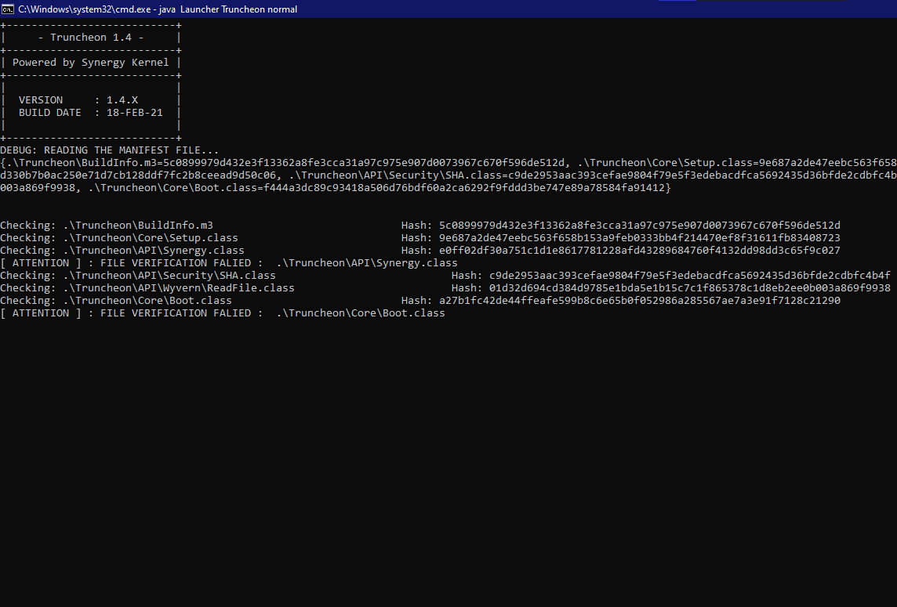
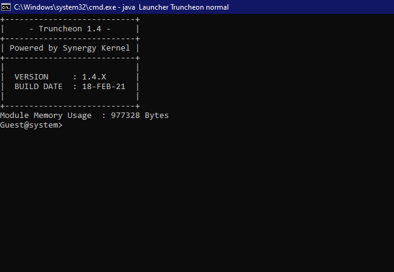
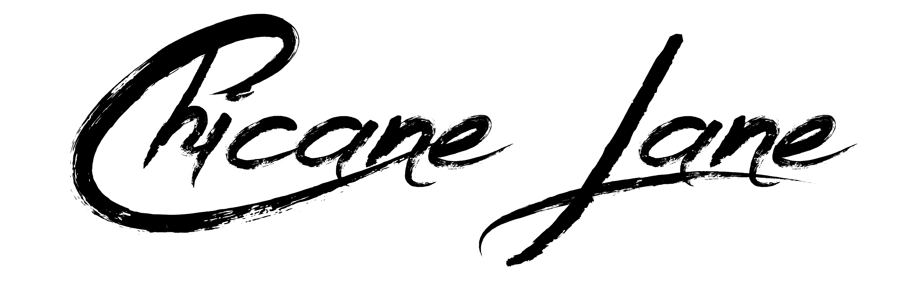

DAK's Bl@g
-
February Monthly Update
25-February-2020 0932 AM +0530 GMT
Hello!
This is the monthly update of my blog.
I have been working on my project, which the iteration for the same is changed to Truncheon. Lamatshu was a project which tried to implement the new features and implementations on the Mosaic Kernel.
But the Mosaic Kernel had its architectural limitations which needed a new Kernel for the program to run on. This was somewhat achieved by modifying it, but did not satisfy the required security and implementation's stability. This program needed a much more advanced implementation which was needed to be developed from start.
Truncheon was created to have a fully reworked code for a completely satisfy the boot asserts securely. This meant that the program would use the same amounts of memory but at the same time maintain the program security.
The project, now, will have the usual development cycle after completing the new program architecture. The program's source code will be opensourced on GitHub as usual, after the source code is stable.Here are a few screenshots of Truncheon running on Windows® with the basic implementation of the kernel working. (Click on image to view it in full size)


Truncheon booting with the Debug Messages. Truncheon's shell after successful boot. I guess that's about it, regarding the update from January to February. Until next time then!
Back to Top
DAK -
Projects, Progress and Plans
20-January-2020 0740 PM +0530 GMT
Hello!
Before we start off with this post, here's a massive shoutout to Chicane Lane Instagram webpage! This page is maintained by my friends, and they cover all sorts of news about Formula 1 and Motorsports! Follow it if you want 2021 to be better than 2020 xD
To view the Instagram page, simply press the logo below!
This is an update about my blogging schedule, projects, progress and the plans for the same.
-
Projects
Since 2016, there would be a new version of Project Nion being developed under a certain codename. This was the same until 2020. In 2020, we saw 2 cycles: Zen Quantum and Mosaic. Each cycle lasted for 6 months, which boosted the overall program efficiency, optimization and size. Mosaic's architecture was good, but not the best. It borrowed and revived a ton of ideas which was shelved since 2015. The development cycles helped me fix fundamental security issues too. But again, I spent a lot of time, working on the project which saturated my schedule. I took a small break to re-evaluate on ideas and code samples, written way back since 2015, to get a few ideas on how the project needs to continue.
- Modularity:
The program needs to be highly modular, which means that irrespective of the frontend, the backend implementation must work as a single unit, while providing a flexible architecture.
- Platform Independence:
This aspect focus was the least until the Mosaic Iteration, where the architectural drawbacks were reflected when trying to run Mosaic on Linux and different platforms. Lamatshu's concept and prototyped architecture proved to be efficient in many aspects which solves the issues and enables a hassle-less experience on any platform.
- Multi-Threading and GUI:
Multi-threading is an efficient way to enable even distribution of tasks across multiple threads. Since Java™ supports multi-threading, I am considering on including APIs which will make programs run using multiple threads.
The aspect of a GUI has been almost non-existent since 2013. But looking at people's preferences and ideas, it would make sense to add a GUI mode to appeal to users who don't really prefer a command line interface. Graphical modes might increase memory usage, hence, it might be restricted only to the client mode, whilst the server code will be CLI based.
- Integral Engine:
I plan to create a library called the Integral Engine which will perform fast math based calculations on Integration and Differentiation. This would mean that using an API, this library could be used for various workloads ranging from graphics to data science. THIS FEATURE IS NOT YET CONFIRMED TO BE INCLUDED, THIS FEATURE MAY NOT MAKE IT TO THE EARLY OR FINAL BUILDS OF LAMATSHU.
Current design and plans for Lamatshu is as follows.
Progress: Lamatshu has a heavily modified core/kernel called "Amethyst" with a new file structure which will allow administrators to work with multiple kernels from different iterations. Basic APIs are being implemented and probably in the month of May or June in 2021, the code will be complete for a stable release.
- Modularity:
-
Blogging Schedule
I plan to write a blog update every sunday or so, based on the project status and other important content such as gaming, programming and streaming. I might even cover generic content, covering my opinions on a given topic. I might miss out on writing or updating the blog on a few Sundays, but I shall try to be as regular as possible in terms of posting blog content here.
-
Future Of Content Creation
I shall begin streaming on Twitch in a few weeks. I have a lot planned for this year in terms of YouTube content and in programming too. I will cover content about how to get started with programming, which might (I hope) help learners and those new to coding understand and practice coding in an efficient and elegant way. I shall try to make the videos as simple as possible which should help people to understand the concepts easily.
TL;DR, I'm back! (sort of xD)
Until next time then!
Back to Top
DAK -
-
Welcome To My Website! (and Blog)
05-January-2020 0141 AM +0530 GMT
Hello all!
A very Happy New Year to all! I welcome you all to my website's brand new Blog! I shall be posting content here frequently about coding, gaming or any random topic here. In this post, I am covering the Blog system. This has been done in such a way that its an easy way to express myself in this space which will talk about anything and everything.
Navigation has been made easy! On the right hand side, you will see links to all my posts which will take you to the desired post. On the left hand side you can read my blog content, either manually scrolling through each post or using the quick links. At the end of the blog you shall find a link which will take you back to the top, which will help mobile users navigate through the page.
I hope you guys like my website. I am working on Lamatshu, a successor to Project Mosaic. The repository will be made public as soon as the code is stable Stay tuned!
To an amazing year ahead,
Back to Top
DAK
{kind=link}
{kind=link}